Sir Michael Atiyah | |
|---|---|
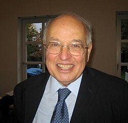 Michael Atiyah in 2007 | |
| Born | Michael Francis Atiyah 22 April 1929 Hampstead, London, England |
| Died | 11 January 2019 (aged 89) Edinburgh, Scotland |
| Education | Trinity College, Cambridge (BA, MA, PhD) |
| Known for | Atiyah algebroid Atiyah conjecture Atiyah conjecture on configurations Atiyah flop Atiyah–Bott formula Atiyah–Bott fixed-point theorem Atiyah–Floer conjecture Atiyah–Hirzebruch spectral sequence Atiyah–Jones conjecture Atiyah–Hitchin–Singer theorem Atiyah–Singer index theorem Atiyah–Segal completion theorem ADHM construction Fredholm module Eta invariant K-theory KR-theory Pin group Toric manifold |
| Awards |
|
| Scientific career | |
| Fields | Mathematics |
| Institutions | |
| Thesis | Some Applications of Topological Methods in Algebraic Geometry (1955) |
| W. V. D. Hodge[1][2] | |
Doctoral students | |
Other notable students | Edward Witten |
{kind=link}
Sir Michael Francis Atiyah (/əˈtiːə/; 22 April 1929 – 11 January 2019) was a British-Lebanese mathematician specialising in geometry.[3] His contributions include the Atiyah–Singer index theorem and co-founding topological K-theory. He was awarded the Fields Medal in 1966 and the Abel Prize in 2004.
Early life and education
{kind=link}
Atiyah was born on 22 April 1929 in Hampstead, London, England, the son of Jean (née Levens) and Edward Atiyah.[4] His mother was Scottish and his father was a Lebanese Orthodox Christian. He had two brothers, Patrick (deceased) and Joe, and a sister, Selma (deceased).[5] Atiyah went to primary school at the Diocesan school in Khartoum, Sudan (1934–1941), and to secondary school at Victoria College in Cairo and Alexandria (1941–1945); the school was also attended by European nobility displaced by the Second World War and some future leaders of Arab nations.[6] He returned to England and Manchester Grammar School for his HSC studies (1945–1947) and did his national service with the Royal Electrical and Mechanical Engineers (1947–1949). His undergraduate and postgraduate studies took place at Trinity College, Cambridge (1949–1955).[7] He was a doctoral student of William V. D. Hodge[2] and was awarded a doctorate in 1955 for a thesis entitled Some Applications of Topological Methods in Algebraic Geometry.[1][2]
During his time at Cambridge, he was president of The Archimedeans.[8]
Career and research
{kind=link}
Atiyah spent the academic year 1955–1956 at the Institute for Advanced Study, Princeton, then returned to Cambridge University, where he was a research fellow and assistant lecturer (1957–1958), then a university lecturer and tutorial fellow at Pembroke College, Cambridge (1958–1961). In 1961, he moved to the University of Oxford, where he was a reader and professorial fellow at St Catherine's College (1961–1963).[7] He became Savilian Professor of Geometry and a professorial fellow of New College, Oxford, from 1963 to 1969. He took up a three-year professorship at the Institute for Advanced Study in Princeton after which he returned to Oxford as a Royal Society Research Professor and professorial fellow of St Catherine's College. He was president of the London Mathematical Society from 1974 to 1976.[7]
I started out by changing local currency into foreign currency everywhere I travelled as a child and ended up making money. That's when my father realised that I would be a mathematician some day.
Atiyah was president of the Pugwash Conferences on Science and World Affairs from 1997 to 2002.[10] He also contributed to the foundation of the InterAcademy Panel on International Issues, the Association of European Academies (ALLEA), and the European Mathematical Society (EMS).[11]
Within the United Kingdom, he was involved in the creation of the Isaac Newton Institute for Mathematical Sciences in Cambridge and was its first director (1990–1996). He was President of the Royal Society (1990–1995), Master of Trinity College, Cambridge (1990–1997),[10] Chancellor of the University of Leicester (1995–2005),[10] and president of the Royal Society of Edinburgh (2005–2008).[12] From 1997 until his death in 2019 he was an honorary professor in the University of Edinburgh. He was a Trustee of the James Clerk Maxwell Foundation.[13]
Atiyah's mathematical collaborators included Raoul Bott, Friedrich Hirzebruch[14] and Isadore Singer, and his students included Graeme Segal, Nigel Hitchin, Simon Donaldson, and Edward Witten.[15] Together with Hirzebruch, he laid the foundations for topological K-theory, an important tool in algebraic topology, which, informally speaking, describes ways in which spaces can be twisted. His best known result, the Atiyah–Singer index theorem, was proved with Singer in 1963 and is used in counting the number of independent solutions to differential equations. Some of his more recent work was inspired by theoretical physics, in particular instantons and monopoles, which are responsible for some corrections in quantum field theory. He was awarded the Fields Medal in 1966 and the Abel Prize in 2004.
Collaborations
{kind=link}
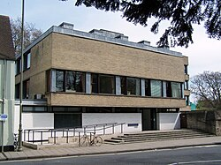
Atiyah collaborated with many mathematicians. His three main collaborations were with Raoul Bott on the Atiyah–Bott fixed-point theorem and many other topics, with Isadore M. Singer on the Atiyah–Singer index theorem, and with Friedrich Hirzebruch on topological K-theory,[16] all of whom he met at the Institute for Advanced Study in Princeton in 1955.[17] His other collaborators included; J. Frank Adams (Hopf invariant problem), Jürgen Berndt (projective planes), Roger Bielawski (Berry–Robbins problem), Howard Donnelly (L-functions), Vladimir G. Drinfeld (instantons), Johan L. Dupont (singularities of vector fields), Lars Gårding (hyperbolic differential equations), Nigel J. Hitchin (monopoles), William V. D. Hodge (Integrals of the second kind), Michael Hopkins (K-theory), Lisa Jeffrey (topological Lagrangians), John D. S. Jones (Yang–Mills theory), Juan Maldacena (M-theory), Yuri I. Manin (instantons), Nick S. Manton (Skyrmions), Vijay K. Patodi (spectral asymmetry), A. N. Pressley (convexity), Elmer Rees (vector bundles), Wilfried Schmid (discrete series representations), Graeme Segal (equivariant K-theory), Alexander Shapiro[18] (Clifford algebras), L. Smith (homotopy groups of spheres), Paul Sutcliffe (polyhedra), David O. Tall (lambda rings), John A. Todd (Stiefel manifolds), Cumrun Vafa (M-theory), Richard S. Ward (instantons) and Edward Witten (M-theory, topological quantum field theories).[19]
His later research on gauge field theories, particularly Yang–Mills theory, stimulated important interactions between geometry and physics, most notably in the work of Edward Witten.[20]
If you attack a mathematical problem directly, very often you come to a dead end, nothing you do seems to work and you feel that if only you could peer round the corner there might be an easy solution. There is nothing like having somebody else beside you, because he can usually peer round the corner.
Atiyah's students included Peter Braam 1987, Simon Donaldson 1983, K. David Elworthy 1967, Howard Fegan 1977, Eric Grunwald 1977, Nigel Hitchin 1972, Lisa Jeffrey 1991, Frances Kirwan 1984, Peter Kronheimer 1986, Ruth Lawrence 1989, George Lusztig 1971, Jack Morava 1968, Michael Murray 1983, Peter Newstead 1966, Ian R. Porteous 1961, John Roe 1985, Brian Sanderson 1963, Rolph Schwarzenberger 1960, Graeme Segal 1967, David Tall 1966, and Graham White 1982.[2]
Other contemporary mathematicians who influenced Atiyah include Roger Penrose, Lars Hörmander, Alain Connes and Jean-Michel Bismut.[22] Atiyah said that the mathematician he most admired was Hermann Weyl,[23] and that his favourite mathematicians from before the 20th century were Bernhard Riemann and William Rowan Hamilton.[24]
The seven volumes of Atiyah's collected papers include most of his work, except for his commutative algebra textbook;[25] the first five volumes are divided thematically and the sixth and seventh arranged by date.
Algebraic geometry (1952–1958)
{kind=link}
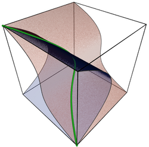
Atiyah's early papers on algebraic geometry (and some general papers) are reprinted in the first volume of his collected works.[26]
As an undergraduate Atiyah was interested in classical projective geometry, and wrote his first paper: a short note on twisted cubics.[27] He started research under W. V. D. Hodge and won the Smith's prize for 1954 for a sheaf-theoretic approach to ruled surfaces,[28] which encouraged Atiyah to continue in mathematics, rather than switch to his other interests—architecture and archaeology.[29] His PhD thesis with Hodge was on a sheaf-theoretic approach to Solomon Lefschetz's theory of integrals of the second kind on algebraic varieties, and resulted in an invitation to visit the Institute for Advanced Study in Princeton for a year.[30] While in Princeton he classified vector bundles on an elliptic curve (extending Alexander Grothendieck's classification of vector bundles on a genus 0 curve), by showing that any vector bundle is a sum of (essentially unique) indecomposable vector bundles,[31] and then showing that the space of indecomposable vector bundles of given degree and positive dimension can be identified with the elliptic curve.[32] He also studied double points on surfaces,[33] giving the first example of a flop, a special birational transformation of 3-folds that was later heavily used in Shigefumi Mori's work on minimal models for 3-folds.[34] Atiyah's flop can also be used to show that the universal marked family of K3 surfaces is not Hausdorff.[35]
K-theory (1959–1974)
{kind=link}
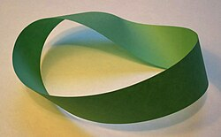
Atiyah's works on K-theory, including his book on K-theory[36] are reprinted in volume 2 of his collected works.[37]
The simplest nontrivial example of a vector bundle is the Möbius band (pictured on the right): a strip of paper with a twist in it, which represents a rank 1 vector bundle over a circle (the circle in question being the centerline of the Möbius band). K-theory is a tool for working with higher-dimensional analogues of this example, or in other words for describing higher-dimensional twistings: elements of the K-group of a space are represented by vector bundles over it, so the Möbius band represents an element of the K-group of a circle.[38]
Topological K-theory was discovered by Atiyah and Friedrich Hirzebruch[39] who were inspired by Grothendieck's proof of the Grothendieck–Riemann–Roch theorem and Bott's work on the periodicity theorem. This paper only discussed the zeroth K-group; they shortly after extended it to K-groups of all degrees,[40] giving the first (nontrivial) example of a generalized cohomology theory.
Several results showed that the newly introduced K-theory was in some ways more powerful than ordinary cohomology theory. Atiyah and Todd[41] used K-theory to improve the lower bounds found using ordinary cohomology by Borel and Serre for the James number, describing when a map from a complex Stiefel manifold to a sphere has a cross section. (Adams and Grant-Walker later showed that the bound found by Atiyah and Todd was best possible.) Atiyah and Hirzebruch[42] used K-theory to explain some relations between Steenrod operations and Todd classes that Hirzebruch had noticed a few years before. The original solution of the Hopf invariant one problem operations by J. F. Adams was very long and complicated, using secondary cohomology operations. Atiyah showed how primary operations in K-theory could be used to give a short solution taking only a few lines, and in joint work with Adams[43] also proved analogues of the result at odd primes.
{kind=link}
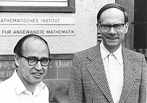
The Atiyah–Hirzebruch spectral sequence relates the ordinary cohomology of a space to its generalized cohomology theory.[40] (Atiyah and Hirzebruch used the case of K-theory, but their method works for all cohomology theories).
Atiyah showed[44] that for a finite group G, the K theory of its classifying space, BG, is isomorphic to the completion of its character ring:
The same year[45] they proved the result for G any compact connected Lie group. Although soon the result could be extended to all compact Lie groups by incorporating results from Graeme Segal's thesis,[46] that extension was complicated. However a simpler and more general proof was produced by introducing equivariant K-theory, i.e. equivalence classes of G-vector bundles over a compact G-space X.[47] It was shown that under suitable conditions the completion of the equivariant K theory of X is isomorphic to the ordinary K-theory of a space, , which fibred over BG with fibre X:
The original result then followed as a corollary by taking X to be a point: the left hand side reduced to the completion of R(G) and the right to K(BG). See Atiyah–Segal completion theorem for more details.
He defined new generalized homology and cohomology theories called bordism and cobordism, and pointed out that many of the deep results on cobordism of manifolds found by René Thom, C. T. C. Wall, and others could be naturally reinterpreted as statements about these cohomology theories.[48] Some of these cohomology theories, in particular complex cobordism, turned out to be some of the most powerful cohomology theories known.
"Algebra is the offer made by the devil to the mathematician. The devil says: `I will give you this powerful machine, it will answer any question you like. All you need to do is give me your soul: give up geometry and you will have this marvellous machine."
He introduced[50] the J-group J(X) of a finite complex X, defined as the group of stable fiber homotopy equivalence classes of sphere bundles; this was later studied in detail by J. F. Adams in a series of papers, leading to the Adams conjecture.
With Hirzebruch he extended the Grothendieck–Riemann–Roch theorem to complex analytic embeddings,[50] and in a related paper[51] they showed that the Hodge conjecture for integral cohomology is false. The Hodge conjecture for rational cohomology is, as of 2008, a major unsolved problem.[52]
The Bott periodicity theorem was a central theme in Atiyah's work on K-theory, and he repeatedly returned to it, reworking the proof several times to understand it better. With Bott he worked out an elementary proof,[53] and gave another version of it in his book.[54] With Bott and Shapiro he analysed the relation of Bott periodicity to the periodicity of Clifford algebras;[55] although this paper did not have a proof of the periodicity theorem, a proof along similar lines was shortly afterwards found by R. Wood. He found a proof of several generalizations using elliptic operators;[56] this new proof used an idea that he used to give a particularly short and easy proof of Bott's original periodicity theorem.[57]
Index theory (1963–1984)
{kind=link}
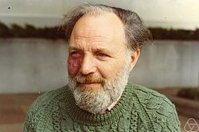
Atiyah's work on index theory is reprinted in volumes 3 and 4 of his collected works.[58][59]
The index of a differential operator is closely related to the number of independent solutions (more precisely, it is the differences of the numbers of independent solutions of the differential operator and its adjoint). There are many hard and fundamental problems in mathematics that can easily be reduced to the problem of finding the number of independent solutions of some differential operator, so if one has some means of finding the index of a differential operator these problems can often be solved. This is what the Atiyah–Singer index theorem does: it gives a formula for the index of certain differential operators, in terms of topological invariants that look quite complicated but are in practice usually straightforward to calculate.
Several deep theorems, such as the Hirzebruch–Riemann–Roch theorem, are special cases of the Atiyah–Singer index theorem. In fact the index theorem gave a more powerful result, because its proof applied to all compact complex manifolds, while Hirzebruch's proof only worked for projective manifolds. There were also many new applications: a typical one is calculating the dimensions of the moduli spaces of instantons. The index theorem can also be run "in reverse": the index is obviously an integer, so the formula for it must also give an integer, which sometimes gives subtle integrality conditions on invariants of manifolds. A typical example of this is Rochlin's theorem, which follows from the index theorem.
The most useful piece of advice I would give to a mathematics student is always to suspect an impressive sounding Theorem if it does not have a special case which is both simple and non-trivial.
The index problem for elliptic differential operators was posed in 1959 by Gel'fand.[61] He noticed the homotopy invariance of the index, and asked for a formula for it by means of topological invariants. Some of the motivating examples included the Riemann–Roch theorem and its generalization the Hirzebruch–Riemann–Roch theorem, and the Hirzebruch signature theorem. Hirzebruch and Borel had proved the integrality of the  genus of a spin manifold, and Atiyah suggested that this integrality could be explained if it were the index of the Dirac operator (which was rediscovered by Atiyah and Singer in 1961).
The first announcement of the Atiyah–Singer theorem was their 1963 paper.[62] The proof sketched in this announcement was inspired by Hirzebruch's proof of the Hirzebruch–Riemann–Roch theorem and was never published by them, though it is described in the book by Palais.[63] Their first published proof[64] was more similar to Grothendieck's proof of the Grothendieck–Riemann–Roch theorem, replacing the cobordism theory of the first proof with K-theory, and they used this approach to give proofs of various generalizations in a sequence of papers from 1968 to 1971.
Instead of just one elliptic operator, one can consider a family of elliptic operators parameterized by some space Y. In this case the index is an element of the K theory of Y, rather than an integer.[65] If the operators in the family are real, then the index lies in the real K theory of Y. This gives a little extra information, as the map from the real K theory of Y to the complex K-theory is not always injective.[66]
{kind=link}
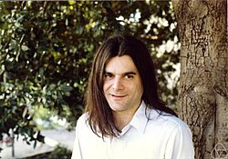
With Bott, Atiyah found an analogue of the Lefschetz fixed-point formula for elliptic operators, giving the Lefschetz number of an endomorphism of an elliptic complex in terms of a sum over the fixed points of the endomorphism.[67] As special cases their formula included the Weyl character formula, and several new results about elliptic curves with complex multiplication, some of which were initially disbelieved by experts.[68] Atiyah and Segal combined this fixed point theorem with the index theorem as follows. If there is a compact group action of a group G on the compact manifold X, commuting with the elliptic operator, then one can replace ordinary K-theory in the index theorem with equivariant K-theory. For trivial groups G this gives the index theorem, and for a finite group G acting with isolated fixed points it gives the Atiyah–Bott fixed point theorem. In general it gives the index as a sum over fixed point submanifolds of the group G.[69]
Atiyah[70] solved a problem asked independently by Hörmander and Gel'fand, about whether complex powers of analytic functions define distributions. Atiyah used Hironaka's resolution of singularities to answer this affirmatively. An ingenious and elementary solution was found at about the same time by J. Bernstein, and discussed by Atiyah.[71]
As an application of the equivariant index theorem, Atiyah and Hirzebruch showed that manifolds with effective circle actions have vanishing Â-genus.[72] (Lichnerowicz showed that if a manifold has a metric of positive scalar curvature then the Â-genus vanishes.)
With Elmer Rees, Atiyah studied the problem of the relation between topological and holomorphic vector bundles on projective space. They solved the simplest unknown case, by showing that all rank 2 vector bundles over projective 3-space have a holomorphic structure.[73] Horrocks had previously found some non-trivial examples of such vector bundles, which were later used by Atiyah in his study of instantons on the 4-sphere.
{kind=link}
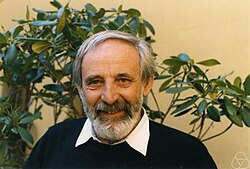
Atiyah, Bott and Vijay K. Patodi[74] gave a new proof of the index theorem using the heat equation.
If the manifold is allowed to have boundary, then some restrictions must be put on the domain of the elliptic operator in order to ensure a finite index. These conditions can be local (like demanding that the sections in the domain vanish at the boundary) or more complicated global conditions (like requiring that the sections in the domain solve some differential equation). The local case was worked out by Atiyah and Bott, but they showed that many interesting operators (e.g., the signature operator) do not admit local boundary conditions. To handle these operators, Atiyah, Patodi and Singer introduced global boundary conditions equivalent to attaching a cylinder to the manifold along the boundary and then restricting the domain to those sections that are square integrable along the cylinder, and also introduced the Atiyah–Patodi–Singer eta invariant. This resulted in a series of papers on spectral asymmetry,[75] which were later unexpectedly used in theoretical physics, in particular in Witten's work on anomalies.
{kind=link}
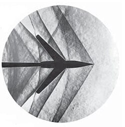
The fundamental solutions of linear hyperbolic partial differential equations often have Petrovsky lacunas: regions where they vanish identically. These were studied in 1945 by I. G. Petrovsky, who found topological conditions describing which regions were lacunas. In collaboration with Bott and Lars Gårding, Atiyah wrote three papers updating and generalizing Petrovsky's work.[76]
Atiyah[77] showed how to extend the index theorem to some non-compact manifolds, acted on by a discrete group with compact quotient. The kernel of the elliptic operator is in general infinite-dimensional in this case, but it is possible to get a finite index using the dimension of a module over a von Neumann algebra; this index is in general real rather than integer valued. This version is called the L2 index theorem, and was used by Atiyah and Schmid[78] to give a geometric construction, using square integrable harmonic spinors, of Harish-Chandra's discrete series representations of semisimple Lie groups. In the course of this work they found a more elementary proof of Harish-Chandra's fundamental theorem on the local integrability of characters of Lie groups.[79]
With H. Donnelly and I. Singer, he extended Hirzebruch's formula (relating the signature defect at cusps of Hilbert modular surfaces to values of L-functions) from real quadratic fields to all totally real fields.[80]
Gauge theory (1977–1985)
{kind=link}
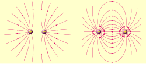
Many of his papers on gauge theory and related topics are reprinted in volume 5 of his collected works.[81] A common theme of these papers is the study of moduli spaces of solutions to certain non-linear partial differential equations, in particular the equations for instantons and monopoles. This often involves finding a subtle correspondence between solutions of two seemingly quite different equations. An early example of this which Atiyah used repeatedly is the Penrose transform, which can sometimes convert solutions of a non-linear equation over some real manifold into solutions of some linear holomorphic equations over a different complex manifold.
In a series of papers with several authors, Atiyah classified all instantons on 4-dimensional Euclidean space. It is more convenient to classify instantons on a sphere as this is compact, and this is essentially equivalent to classifying instantons on Euclidean space as this is conformally equivalent to a sphere and the equations for instantons are conformally invariant. With Hitchin and Singer[82] he calculated the dimension of the moduli space of irreducible self-dual connections (instantons) for any principal bundle over a compact 4-dimensional Riemannian manifold (the Atiyah–Hitchin–Singer theorem). For example, the dimension of the space of SU2 instantons of rank k>0 is 8k−3. To do this they used the Atiyah–Singer index theorem to calculate the dimension of the tangent space of the moduli space at a point; the tangent space is essentially the space of solutions of an elliptic differential operator, given by the linearization of the non-linear Yang–Mills equations. These moduli spaces were later used by Donaldson to construct his invariants of 4-manifolds. Atiyah and Ward used the Penrose correspondence to reduce the classification of all instantons on the 4-sphere to a problem in algebraic geometry.[83] With Hitchin he used ideas of Horrocks to solve this problem, giving the ADHM construction of all instantons on a sphere; Manin and Drinfeld found the same construction at the same time, leading to a joint paper by all four authors.[84] Atiyah reformulated this construction using quaternions and wrote up a leisurely account of this classification of instantons on Euclidean space as a book.[85]
The mathematical problems that have been solved or techniques that have arisen out of physics in the past have been the lifeblood of mathematics.
Atiyah's work on instanton moduli spaces was used in Donaldson's work on Donaldson theory. Donaldson showed that the moduli space of (degree 1) instantons over a compact simply connected 4-manifold with positive definite intersection form can be compactified to give a cobordism between the manifold and a sum of copies of complex projective space. He deduced from this that the intersection form must be a sum of one-dimensional ones, which led to several spectacular applications to smooth 4-manifolds, such as the existence of non-equivalent smooth structures on 4-dimensional Euclidean space. Donaldson went on to use the other moduli spaces studied by Atiyah to define Donaldson invariants, which revolutionized the study of smooth 4-manifolds, and showed that they were more subtle than smooth manifolds in any other dimension, and also quite different from topological 4-manifolds. Atiyah described some of these results in a survey talk.[87]
Green's functions for linear partial differential equations can often be found by using the Fourier transform to convert this into an algebraic problem. Atiyah used a non-linear version of this idea.[88] He used the Penrose transform to convert the Green's function for the conformally invariant Laplacian into a complex analytic object, which turned out to be essentially the diagonal embedding of the Penrose twistor space into its square. This allowed him to find an explicit formula for the conformally invariant Green's function on a 4-manifold.
In his paper with Jones,[89] he studied the topology of the moduli space of SU(2) instantons over a 4-sphere. They showed that the natural map from this moduli space to the space of all connections induces epimorphisms of homology groups in a certain range of dimensions, and suggested that it might induce isomorphisms of homology groups in the same range of dimensions. This became known as the Atiyah–Jones conjecture, and was later proved by several mathematicians.[90]
Harder and M. S. Narasimhan described the cohomology of the moduli spaces of stable vector bundles over Riemann surfaces by counting the number of points of the moduli spaces over finite fields, and then using the Weil conjectures to recover the cohomology over the complex numbers.[91] Atiyah and R. Bott used Morse theory and the Yang–Mills equations over a Riemann surface to reproduce and extending the results of Harder and Narasimhan.[92]
An old result due to Schur and Horn states that the set of possible diagonal vectors of an Hermitian matrix with given eigenvalues is the convex hull of all the permutations of the eigenvalues. Atiyah proved a generalization of this that applies to all compact symplectic manifolds acted on by a torus, showing that the image of the manifold under the moment map is a convex polyhedron,[93] and with Pressley gave a related generalization to infinite-dimensional loop groups.[94]
Duistermaat and Heckman found a striking formula, saying that the push-forward of the Liouville measure of a moment map for a torus action is given exactly by the stationary phase approximation (which is in general just an asymptotic expansion rather than exact). Atiyah and Bott[95] showed that this could be deduced from a more general formula in equivariant cohomology, which was a consequence of well-known localization theorems. Atiyah showed[96] that the moment map was closely related to geometric invariant theory, and this idea was later developed much further by his student F. Kirwan. Witten shortly after applied the Duistermaat–Heckman formula to loop spaces and showed that this formally gave the Atiyah–Singer index theorem for the Dirac operator; this idea was lectured on by Atiyah.[97]
With Hitchin he worked on magnetic monopoles, and studied their scattering using an idea of Nick Manton.[98] His book[99] with Hitchin gives a detailed description of their work on magnetic monopoles. The main theme of the book is a study of a moduli space of magnetic monopoles; this has a natural Riemannian metric, and a key point is that this metric is complete and hyperkähler. The metric is then used to study the scattering of two monopoles, using a suggestion of N. Manton that the geodesic flow on the moduli space is the low energy approximation to the scattering. For example, they show that a head-on collision between two monopoles results in 90-degree scattering, with the direction of scattering depending on the relative phases of the two monopoles. He also studied monopoles on hyperbolic space.[100]
Atiyah showed[101] that instantons in 4 dimensions can be identified with instantons in 2 dimensions, which are much easier to handle. There is of course a catch: in going from 4 to 2 dimensions the structure group of the gauge theory changes from a finite-dimensional group to an infinite-dimensional loop group. This gives another example where the moduli spaces of solutions of two apparently unrelated nonlinear partial differential equations turn out to be essentially the same.
Atiyah and Singer found that anomalies in quantum field theory could be interpreted in terms of index theory of the Dirac operator;[102] this idea later became widely used by physicists.
Later work (1986–2019)
{kind=link}
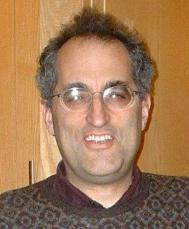
Many of the papers in the 6th volume[103] of his collected works are surveys, obituaries, and general talks. Atiyah continued to publish subsequently, including several surveys, a popular book,[104] and another paper with Segal on twisted K-theory.
One paper[105] is a detailed study of the Dedekind eta function from the point of view of topology and the index theorem.
Several of his papers from around this time study the connections between quantum field theory, knots, and Donaldson theory. He introduced the concept of a topological quantum field theory, inspired by Witten's work and Segal's definition of a conformal field theory.[106] His book "The Geometry and Physics of Knots"[107] describes the new knot invariants found by Vaughan Jones and Edward Witten in terms of topological quantum field theories, and his paper with L. Jeffrey[108] explains Witten's Lagrangian giving the Donaldson invariants.
He studied skyrmions with Nick Manton,[109] finding a relation with magnetic monopoles and instantons, and giving a conjecture for the structure of the moduli space of two skyrmions as a certain subquotient of complex projective 3-space.
Several papers[110] were inspired by a question of Jonathan Robbins (called the Berry–Robbins problem), who asked if there is a map from the configuration space of n points in 3-space to the flag manifold of the unitary group. Atiyah gave an affirmative answer to this question, but felt his solution was too computational and studied a conjecture that would give a more natural solution. He also related the question to Nahm's equation, and introduced the Atiyah conjecture on configurations.
But for most practical purposes, you just use the classical groups. The exceptional Lie groups are just there to show you that the theory is a bit bigger; it is pretty rare that they ever turn up.
With Juan Maldacena and Cumrun Vafa,[112] and E. Witten[113] he described the dynamics of M-theory on manifolds with G2 holonomy. These papers seem to be the first time that Atiyah worked on exceptional Lie groups.
In his papers with M. Hopkins[114] and G. Segal[115] he returned to his earlier interest of K-theory, describing some twisted forms of K-theory with applications in theoretical physics.
In October 2016, he claimed[116] a short proof of the non-existence of complex structures on the 6-sphere. His proof, like many predecessors, is considered flawed by the mathematical community, even after the proof was rewritten in a revised form.[117][118]
At the 2018 Heidelberg Laureate Forum, he claimed to have solved the Riemann hypothesis, Hilbert's eighth problem, by contradiction using the fine-structure constant. Again, the proof did not hold up and the hypothesis remains one of the six unsolved Millennium Prize Problems in mathematics, as of 2025.[119][120]
Bibliography
Books
This subsection lists all books written by Atiyah; it omits a few books that he edited.
- Atiyah, Michael F.; Macdonald, Ian G. (1969), Introduction to commutative algebra, Addison-Wesley Publishing Co., Reading, Mass.-London-Don Mills, Ont., MR 0242802. A classic textbook covering standard commutative algebra.
- Atiyah, Michael F. (1970), Vector fields on manifolds, Arbeitsgemeinschaft für Forschung des Landes Nordrhein-Westfalen, Heft 200, Cologne: Westdeutscher Verlag, MR 0263102. Reprinted as (Atiyah 1988b, item 50).
- Atiyah, Michael F. (1974), Elliptic operators and compact groups, Lecture Notes in Mathematics, Vol. 401, Berlin, New York: Springer-Verlag, MR 0482866. Reprinted as (Atiyah 1988c, item 78).
- Atiyah, Michael F. (1979), Geometry of Yang–Mills fields, Scuola Normale Superiore Pisa, Pisa, MR 0554924. Reprinted as (Atiyah 1988e, item 99).
- Atiyah, Michael F.; Hitchin, Nigel (1988), The geometry and dynamics of magnetic monopoles, M. B. Porter Lectures, Princeton University Press, doi:10.1515/9781400859306, ISBN 978-0-691-08480-0, MR 0934202. Reprinted as (Atiyah 2004, item 126).
- Atiyah, Michael F. (1988a), Collected works. Vol. 1 Early papers: general papers, Oxford Science Publications, The Clarendon Press Oxford University Press, ISBN 978-0-19-853275-0, MR 0951892.
- Atiyah, Michael F. (1988b), Collected works. Vol. 2 K-theory, Oxford Science Publications, The Clarendon Press Oxford University Press, ISBN 978-0-19-853276-7, MR 0951892.
- Atiyah, Michael F. (1988c), Collected works. Vol. 3 Index theory: 1, Oxford Science Publications, The Clarendon Press Oxford University Press, ISBN 978-0-19-853277-4, MR 0951892.
- Atiyah, Michael F. (1988d), Collected works. Vol. 4 Index theory: 2, Oxford Science Publications, The Clarendon Press Oxford University Press, ISBN 978-0-19-853278-1, MR 0951892.
- Atiyah, Michael F. (1988e), Collected works. Vol. 5 Gauge theories, Oxford Science Publications, The Clarendon Press Oxford University Press, ISBN 978-0-19-853279-8, MR 0951892.
- Atiyah, Michael F. (1989), K-theory, Advanced Book Classics (2nd ed.), Addison-Wesley, ISBN 978-0-201-09394-0, MR 1043170. First edition (1967) reprinted as (Atiyah 1988b, item 45).
- Atiyah, Michael F. (1990), The geometry and physics of knots, Lezioni Lincee. [Lincei Lectures], Cambridge University Press, doi:10.1017/CBO9780511623868, ISBN 978-0-521-39521-2, MR 1078014. Reprinted as (Atiyah 2004, item 136).
- Atiyah, Michael F. (2004), Collected works. Vol. 6, Oxford Science Publications, The Clarendon Press Oxford University Press, ISBN 978-0-19-853099-2, MR 2160826.
- Atiyah, Michael F. (2007), Siamo tutti matematici (Italian: We are all mathematicians), Roma: Di Renzo Editore, p. 96, ISBN 978-88-8323-157-5, archived from the original on 14 January 2019, retrieved 23 July 2008
- Atiyah, Michael (2014), Collected works. Vol. 7. 2002-2013, Oxford Science Publications, The Clarendon Press Oxford University Press, ISBN 978-0-19-968926-2, MR 3223085.
- Atiyah, Michael F.; Iagolnitzer, Daniel; Chong, Chitat (2015), Fields Medallists' Lectures (3rd Edition), World Scientific, doi:10.1142/9652, ISBN 978-981-4696-18-0.
Selected papers
- Atiyah, Michael F. (1961), "Characters and cohomology of finite groups", Inst. Hautes Études Sci. Publ. Math., 9 (1): 23–64, doi:10.1007/BF02698718, S2CID 54764252. Reprinted in (Atiyah 1988b, paper 29).
- Atiyah, Michael F.; Hirzebruch, Friedrich (1961). "Vector bundles and homogeneous spaces". In Allendorfer, Carl B. (ed.). Differential Geometry. Proceedings of Symposia in Pure Mathematics. Vol. 3. Providence: American Mathematical Society. pp. 7–38. doi:10.1090/pspum/003/0139181. ISBN 978-0-8218-1403-1. Reprinted in (Atiyah 1988b, paper 28).
- Atiyah, Michael F.; Segal, Graeme B. (1969), "Equivariant K-Theory and Completion", Journal of Differential Geometry, 3 (1–2): 1–18, doi:10.4310/jdg/1214428815. Reprinted in (Atiyah 1988b, paper 49).
- Atiyah, Michael F. (1976), "Elliptic operators, discrete groups and von Neumann algebras", Colloque "Analyse et Topologie" en l'Honneur de Henri Cartan (Orsay, 1974), Asterisque, vol. 32–33, Soc. Math. France, Paris, pp. 43–72, MR 0420729. Reprinted in (Atiyah 1988d, paper 89). Formulation of the Atiyah "Conjecture" on the rationality of the L2-Betti numbers.
- Atiyah, Michael F.; Singer, Isadore M. (1963), "The Index of Elliptic Operators on Compact Manifolds", Bull. Amer. Math. Soc., 69 (3): 322–433, doi:10.1090/S0002-9904-1963-10957-X. An announcement of the index theorem. Reprinted in (Atiyah 1988c, paper 56).
- Atiyah, Michael F.; Singer, Isadore M. (1968a), "The Index of Elliptic Operators I", Annals of Mathematics, 87 (3): 484–530, doi:10.2307/1970715, JSTOR 1970715. This gives a proof using K-theory instead of cohomology. Reprinted in (Atiyah 1988c, paper 64).
- Atiyah, Michael F.; Segal, Graeme B. (1968), "The Index of Elliptic Operators: II", Annals of Mathematics, Second Series, 87 (3): 531–545, doi:10.2307/1970716, JSTOR 1970716. This reformulates the result as a sort of Lefschetz fixed point theorem, using equivariant K-theory. Reprinted in (Atiyah 1988c, paper 65).
- Atiyah, Michael F.; Singer, Isadore M. (1968b), "The Index of Elliptic Operators III", Annals of Mathematics, Second Series, 87 (3): 546–604, doi:10.2307/1970717, JSTOR 1970717. This paper shows how to convert from the K-theory version to a version using cohomology. Reprinted in (Atiyah 1988c, paper 66).
- Atiyah, Michael F.; Singer, Isadore M. (1971), "The Index of Elliptic Operators IV", Annals of Mathematics, Second Series, 93 (1): 119–138, doi:10.2307/1970756, JSTOR 1970756 This paper studies families of elliptic operators, where the index is now an element of the K-theory of the space parametrizing the family. Reprinted in (Atiyah 1988c, paper 67).
- Atiyah, Michael F.; Singer, Isadore M. (1971), "The Index of Elliptic Operators V", Annals of Mathematics, Second Series, 93 (1): 139–149, doi:10.2307/1970757, JSTOR 1970757. This studies families of real (rather than complex) elliptic operators, when one can sometimes squeeze out a little extra information. Reprinted in (Atiyah 1988c, paper 68).
- Atiyah, Michael F.; Bott, Raoul (1966), "A Lefschetz Fixed Point Formula for Elliptic Differential Operators", Bull. Am. Math. Soc., 72 (2): 245–50, doi:10.1090/S0002-9904-1966-11483-0. This states a theorem calculating the Lefschetz number of an endomorphism of an elliptic complex. Reprinted in (Atiyah 1988c, paper 61).
- Atiyah, Michael F.; Bott, Raoul (1967), "A Lefschetz Fixed Point Formula for Elliptic Complexes: I", Annals of Mathematics, Second Series, 86 (2): 374–407, doi:10.2307/1970694, JSTOR 1970694 (reprinted in (Atiyah 1988c, paper 61))and Atiyah, Michael F.; Bott, Raoul (1968), "A Lefschetz Fixed Point Formula for Elliptic Complexes: II. Applications", Annals of Mathematics, Second Series, 88 (3): 451–491, doi:10.2307/1970721, JSTOR 1970721. Reprinted in (Atiyah 1988c, paper 62). These give the proofs and some applications of the results announced in the previous paper.
- Atiyah, Michael F.; Bott, Raoul; Patodi, Vijay K. (1973), "On the heat equation and the index theorem" (PDF), Invent. Math., 19 (4): 279–330, Bibcode:1973InMat..19..279A, doi:10.1007/BF01425417, MR 0650828, S2CID 115700319; Atiyah, Michael F.; Bott, R.; Patodi, V. K. (1975), "Errata", Invent. Math., 28 (3): 277–280, Bibcode:1975InMat..28..277A, doi:10.1007/BF01425562, MR 0650829 Reprinted in (Atiyah 1988d, paper 79, 79a).
- Atiyah, Michael F.; Schmid, Wilfried (1977), "A geometric construction of the discrete series for semisimple Lie groups", Invent. Math., 42 (1): 1–62, Bibcode:1977InMat..42....1A, doi:10.1007/BF01389783, MR 0463358, S2CID 189831012; Atiyah, Michael F.; Schmid, Wilfried (1979), "Erratum", Invent. Math., 54 (2): 189–192, Bibcode:1979InMat..54..189A, doi:10.1007/BF01408936, MR 0550183. Reprinted in (Atiyah 1988d, paper 90).
- Atiyah, Michael (2010), Edinburgh Lectures on Geometry, Analysis and Physics, arXiv:1009.4827v1, Bibcode:2010arXiv1009.4827A
Awards and honours
{kind=link}
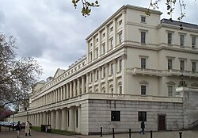
In 1966, when he was thirty-seven years old, he was awarded the Fields Medal,[121] for his work in developing K-theory, a generalized Lefschetz fixed-point theorem and the Atiyah–Singer theorem, for which he also won the Abel Prize jointly with Isadore Singer in 2004.[122] Among other prizes he has received are the Royal Medal of the Royal Society in 1968,[123] the De Morgan Medal of the London Mathematical Society in 1980, the Antonio Feltrinelli Prize from the Accademia Nazionale dei Lincei in 1981, the King Faisal International Prize for Science in 1987,[124] the Copley Medal of the Royal Society in 1988,[125] the Benjamin Franklin Medal for Distinguished Achievement in the Sciences of the American Philosophical Society in 1993,[126] the Jawaharlal Nehru Birth Centenary Medal of the Indian National Science Academy in 1993,[127] the President's Medal from the Institute of Physics in 2008,[128] the Grande Médaille of the French Academy of Sciences in 2010[129] and the Grand Officier of the French Légion d'honneur in 2011.[130]
He was elected a foreign member of the National Academy of Sciences, the American Academy of Arts and Sciences (1969),[131] the Académie des Sciences, the Akademie Leopoldina, the Royal Swedish Academy, the Royal Irish Academy, the Royal Society of Edinburgh, the American Philosophical Society, the Indian National Science Academy, the Chinese Academy of Sciences, the Australian Academy of Science, the Russian Academy of Science, the Ukrainian Academy of Science, the Georgian Academy of Science, the Venezuela Academy of Science, the Norwegian Academy of Science and Letters, the Royal Spanish Academy of Science, the Accademia dei Lincei and the Moscow Mathematical Society.[7][10] In 2012, he became a fellow of the American Mathematical Society.[132] He was also appointed as an Honorary Fellow[133] of the Royal Academy of Engineering[133] in 1993.
Atiyah was awarded honorary degrees by the universities of Birmingham, Bonn, Chicago, Cambridge, Dublin, Durham, Edinburgh, Essex, Ghent, Helsinki, Lebanon, Leicester, London, Mexico, Montreal, Oxford, Reading, Salamanca, St. Andrews, Sussex, Wales, Warwick, the American University of Beirut, Brown University, Charles University in Prague, Harvard University, Heriot–Watt University, Hong Kong (Chinese University), Keele University, Queen's University (Canada), The Open University, University of Waterloo, Wilfrid Laurier University, Technical University of Catalonia, and UMIST.[7][10][134][135]
Atiyah was made a Knight Bachelor in 1983[7] and made a member of the Order of Merit in 1992.[10]
The Michael Atiyah building[136] at the University of Leicester and the Michael Atiyah Chair in Mathematical Sciences[137] at the American University of Beirut were named after him.
Personal life
Atiyah married Lily Brown on 30 July 1955, with whom he had three sons, John, David and Robin. Atiyah's eldest son John died on 24 June 2002 while on a walking holiday in the Pyrenees with his wife Maj-Lis.
Lily Atiyah died on 13 March 2018 at the age of 90[3][5][7] while Sir Michael Atiyah died less than a year later on 11 January 2019, aged 89.[138][139]
See also
References
- ^ a b Atiyah, Michael Francis (1955). Some applications of topological methods in algebraic geometry. repository.cam.ac.uk (PhD thesis). University of Cambridge. Archived from the original on 18 November 2017. Retrieved 17 November 2017.
- ^ a b c d e f g h i j k l m n o Michael Atiyah at the Mathematics Genealogy Project
- ^ a b O'Connor, John J.; Robertson, Edmund F., "Michael Atiyah", MacTutor History of Mathematics Archive, University of St Andrews
- ^ "ATIYAH, Sir Michael (Francis)". Who's Who. Vol. 2014 (online edition via Oxford University Press ed.). A & C Black. (Subscription or UK public library membership required.)
- ^ a b Atiyah, Joe (2007), The Atiyah Family, retrieved 14 August 2008
- ^ Raafat, Samir, Victoria College: educating the elite, 1902−1956, archived from the original on 16 April 2008, retrieved 14 August 2008
- ^ a b c d e f g Atiyah 1988a, p. xi
- ^ "[Presidents Archimedeans]". Archimedeans: Previous Committees and Officers. Archived from the original on 26 August 2019. Retrieved 10 April 2019.
- ^ Batra, Amba (8 November 2003), Maths guru with Einstein's dream prefers chalk to mouse. (Interview with Atiyah.), Delhi newsline, archived from the original on 8 February 2009, retrieved 14 August 2008
- ^ a b c d e f Atiyah 2004, p. ix
- ^ "Atiyah and Singer receive 2004 Abel prize" (PDF), Notices of the American Mathematical Society, 51 (6): 650–651, 2006, archived (PDF) from the original on 10 September 2008, retrieved 14 August 2008
- ^ Royal Society of Edinburgh announcement, archived from the original on 20 November 2008, retrieved 14 August 2008
- ^ "James Clerk Maxwell Foundation Annual Report and Summary Accounts" (PDF). 2019.
- ^ Atiyah, Michael (2014). "Friedrich Ernst Peter Hirzebruch 17 October 1927 – 27 May 2012". Biographical Memoirs of Fellows of the Royal Society. 60: 229–247. doi:10.1098/rsbm.2014.0010.
- ^ "Edward Witten – Adventures in physics and math (Kyoto Prize lecture 2014)" (PDF). Archived from the original (PDF) on 23 August 2016. Retrieved 30 October 2016.
- ^ Atiyah 2004, p. 9
- ^ Atiyah 1988a, p. 2
- ^ Alexander Shapiro at the Mathematics Genealogy Project
- ^ Atiyah 2004, pp. xi–xxv
- ^ "Edward Witten – Adventures in physics and math" (PDF). Archived (PDF) from the original on 23 August 2016. Retrieved 30 October 2016.
- ^ Atiyah 1988a, paper 12, p. 233
- ^ Atiyah 2004, p. 10
- ^ Atiyah 1988a, p. 307
- ^ Interview with Michael Atiyah, superstringtheory.com, archived from the original on 14 September 2008, retrieved 14 August 2008
- ^ Atiyah & Macdonald 1969
- ^ Atiyah 1988a
- ^ Atiyah 1988a, paper 1
- ^ Atiyah 1988a, paper 2
- ^ Atiyah 1988a, p. 1
- ^ Atiyah 1988a, papers 3, 4
- ^ Atiyah 1988a, paper 5
- ^ Atiyah 1988a, paper 7
- ^ Atiyah 1988a, paper 8
- ^ Matsuki 2002.
- ^ Barth et al. 2004
- ^ Atiyah 1989
- ^ Atiyah 1988b
- ^ Atiyah, Michael (2000). "K-Theory Past and Present". arXiv:math/0012213.
- ^ Atiyah 1988b, paper 24
- ^ a b Atiyah 1988b, paper 28
- ^ Atiyah 1988b, paper 26
- ^ Atiyah 1988a, papers 30,31
- ^ Atiyah 1988b, paper 42
- ^ Atiyah 1961
- ^ Atiyah & Hirzebruch 1961
- ^ Segal 1968
- ^ Atiyah & Segal 1969
- ^ Atiyah 1988b, paper 34
- ^ Atiyah 2004, paper 160, p. 7
- ^ a b Atiyah 1988b, paper 37
- ^ Atiyah 1988b, paper 36
- ^ Deligne, Pierre, The Hodge conjecture (PDF), The Clay Math Institute, archived from the original (PDF) on 27 August 2008, retrieved 14 August 2008
- ^ Atiyah 1988b, paper 40
- ^ Atiyah 1988b, paper 45
- ^ Atiyah 1988b, paper 39
- ^ Atiyah 1988b, paper 46
- ^ Atiyah 1988b, paper 48
- ^ Atiyah 1988c
- ^ Atiyah 1988d
- ^ Atiyah 1988a, paper 17, p. 76
- ^ Gel'fand 1960
- ^ Atiyah & Singer 1963
- ^ Palais 1965
- ^ Atiyah & Singer 1968a
- ^ Atiyah 1988c, paper 67
- ^ Atiyah 1988c, paper 68
- ^ Atiyah 1988c, papers 61, 62, 63
- ^ Atiyah 1988c, p. 3
- ^ Atiyah 1988c, paper 65
- ^ Atiyah 1988c, paper 73
- ^ Atiyah 1988a, paper 15
- ^ Atiyah 1988c, paper 74
- ^ Atiyah 1988c, paper 76
- ^ Atiyah, Bott & Patodi 1973
- ^ Atiyah 1988d, papers 80–83
- ^ Atiyah 1988d, papers 84, 85, 86
- ^ Atiyah 1976
- ^ Atiyah & Schmid 1977
- ^ Atiyah 1988d, paper 91
- ^ Atiyah 1988d, papers 92, 93
- ^ Atiyah 1988e.
- ^ Atiyah 1988e, papers 94, 97
- ^ Atiyah 1988e, paper 95
- ^ Atiyah 1988e, paper 96
- ^ Atiyah 1988e, paper 99
- ^ Atiyah 1988a, paper 19, p. 13
- ^ Atiyah 1988e, paper 112
- ^ Atiyah 1988e, paper 101
- ^ Atiyah 1988e, paper 102
- ^ Boyer et al. 1993
- ^ Harder & Narasimhan 1975
- ^ Atiyah 1988e, papers 104–105
- ^ Atiyah 1988e, paper 106
- ^ Atiyah 1988e, paper 108
- ^ Atiyah 1988e, paper 109
- ^ Atiyah 1988e, paper 110
- ^ Atiyah 1988e, paper 124
- ^ Atiyah 1988e, papers 115, 116
- ^ Atiyah & Hitchin 1988
- ^ Atiyah 1988e, paper 118
- ^ Atiyah 1988e, paper 117
- ^ Atiyah 1988e, papers 119, 120, 121
- ^ Michael Atiyah 2004
- ^ Atiyah 2007
- ^ Atiyah 2004, paper 127
- ^ Atiyah 2004, paper 132
- ^ Atiyah 1990
- ^ Atiyah 2004, paper 139
- ^ Atiyah 2004, papers 141, 142
- ^ Atiyah 2004, papers 163, 164, 165, 166, 167, 168
- ^ Atiyah 1988a, paper 19, p. 19
- ^ Atiyah 2004, paper 169
- ^ Atiyah 2004, paper 170
- ^ Atiyah 2004, paper 172
- ^ Atiyah 2004, paper 173
- ^ Atiyah, Michael (2016). "The Non-Existent Complex 6-Sphere". arXiv:1610.09366 [math.DG].
- ^ What is the current understanding regarding complex structures on the 6-sphere? (MathOverflow), retrieved 24 September 2018
- ^ Atiyah's May 2018 paper on the 6-sphere (MathOverflow), retrieved 24 September 2018
- ^ "Skepticism surrounds renowned mathematician's attempted proof of 160-year-old hypothesis". Science | AAAS. 24 September 2018. Archived from the original on 26 September 2018. Retrieved 26 September 2018.
- ^ "Riemann hypothesis likely remains unsolved despite claimed proof". Archived from the original on 24 September 2018. Retrieved 24 September 2018.
- ^ Fields medal citation: Cartan, Henri (1968), "L'oeuvre de Michael F. Atiyah", Proceedings of International Conference of Mathematicians (Moscow, 1966), Izdatyel'stvo Mir, Moscow, pp. 9–14
- ^ "2004: Sir Michael Francis Atiyah and Isadore M. Singer". www.abelprize.no. Retrieved 22 August 2022.
- ^ Royal archive winners 1989–1950, archived from the original on 9 June 2008, retrieved 14 August 2008
- ^ Sir Michael Atiyah FRS, Newton institute, archived from the original on 31 May 2008, retrieved 14 August 2008
- ^ Copley archive winners 1989–1900, archived from the original on 9 June 2008, retrieved 14 August 2008
- ^ "Benjamin Franklin Medal for Distinguished Achievement in the Sciences Recipients". American Philosophical Society. Archived from the original on 24 September 2012. Retrieved 27 November 2011.
- ^ Jawaharlal Nehru Birth Centenary Medal, retrieved 14 August 2008
{{citation}}: CS1 maint: deprecated archival service (link) - ^ 2008 President's medal, retrieved 14 August 2008
- ^ La Grande Medaille, archived from the original on 1 August 2010, retrieved 25 January 2011
- ^ Legion d'honneur, archived from the original on 24 September 2011, retrieved 11 September 2011
- ^ "Book of Members, 1780-2010: Chapter A" (PDF). American Academy of Arts and Sciences. Archived (PDF) from the original on 10 May 2011. Retrieved 27 April 2011.
- ^ List of Fellows of the American Mathematical Society Archived 5 August 2013 at the Wayback Machine, retrieved 3 November 2012.
- ^ a b "List of Fellows". Archived from the original on 8 June 2016. Retrieved 28 October 2014.
- ^ "Heriot-Watt University Edinburgh: Honorary Graduates". www1.hw.ac.uk. Archived from the original on 18 April 2016. Retrieved 4 April 2016.
- ^ Honorary Doctorates, Charles University in Prague, retrieved 4 May 2018
- ^ The Michael Atiyah building, archived from the original on 9 February 2009, retrieved 14 August 2008
- ^ American University of Beirut establishes the Michael Atiyah Chair in Mathematical Sciences, archived from the original on 3 April 2008, retrieved 14 August 2008
- ^ "Michael Atiyah 1929-2019". University of Oxford Mathematical Institute. 11 January 2019. Archived from the original on 11 January 2019. Retrieved 11 January 2019.
- ^ "A tribute to former President of the Royal Society Sir Michael Atiyah OM FRS (1929 - 2019)". The Royal Society. 11 January 2019. Archived from the original on 11 January 2019. Retrieved 11 January 2019.
Sources
- Boyer, Charles P.; Hurtubise, J. C.; Mann, B. M.; Milgram, R. J. (1993), "The topology of instanton moduli spaces. I. The Atiyah–Jones conjecture", Annals of Mathematics, Second Series, 137 (3): 561–609, doi:10.2307/2946532, ISSN 0003-486X, JSTOR 2946532, MR 1217348
- Barth, Wolf P.; Hulek, Klaus; Peters, Chris A.M.; Van de Ven, Antonius (2004), Compact Complex Surfaces, Berlin: Springer, p. 334, ISBN 978-3-540-00832-3
- Gel'fand, Israel M. (1960), "On elliptic equations", Russ. Math. Surv., 15 (3): 113–123, Bibcode:1960RuMaS..15..113G, doi:10.1070/rm1960v015n03ABEH004094. Reprinted in volume 1 of his collected works, p. 65–75, ISBN 0-387-13619-3. On page 120 Gel'fand suggests that the index of an elliptic operator should be expressible in terms of topological data.
- Harder, G.; Narasimhan, M. S. (1975), "On the cohomology groups of moduli spaces of vector bundles on curves", Mathematische Annalen, 212 (3): 215–248, doi:10.1007/BF01357141, ISSN 0025-5831, MR 0364254, S2CID 117851906, archived from the original on 5 March 2016, retrieved 30 September 2013
- Matsuki, Kenji (2002), Introduction to the Mori program, Universitext, Berlin, New York: Springer-Verlag, doi:10.1007/978-1-4757-5602-9, ISBN 978-0-387-98465-0, MR 1875410
- Palais, Richard S. (1965), Seminar on the Atiyah–Singer Index Theorem, Annals of Mathematics Studies, vol. 57, S.l.: Princeton Univ Press, ISBN 978-0-691-08031-4. This describes the original proof of the index theorem. (Atiyah and Singer never published their original proof themselves, but only improved versions of it.)
- Segal, Graeme B. (1968), "The representation ring of a compact Lie group", Inst. Hautes Études Sci. Publ. Math., 34 (1): 113–128, doi:10.1007/BF02684592, S2CID 55847918.
- Yau, Shing-Tung; Chan, Raymond H., eds. (1999), "Sir Michael Atiyah: a great mathematician of the twentieth century", Asian J. Math., vol. 3, International Press, pp. 1–332, ISBN 978-1-57146-080-6, MR 1701915, archived from the original on 8 August 2008.
- Yau, Shing-Tung, ed. (2005), The Founders of Index Theory: Reminiscences of Atiyah, Bott, Hirzebruch, and Singer, International Press, p. 358, ISBN 978-1-57146-120-9, archived from the original on 7 February 2006.
External links
- Michael Atiyah tells his life story at Web of Stories
- The celebrations of Michael Atiyah's 80th birthday in Edinburgh, 20-24 April 2009
- Mathematical descendants of Michael Atiyah
- "Sir Michael Atiyah on math, physics and fun", superstringtheory.com, Official Superstring theory web site], archived from the original on 14 September 2008, retrieved 14 August 2008
- Atiyah, Michael, Beauty in Mathematics (video, 3m14s), archived from the original on 26 May 2011, retrieved 14 August 2008
- Atiyah, Michael, The nature of space (Online lecture), archived from the original on 3 August 2020, retrieved 14 August 2008
- Batra, Amba (8 November 2003), Maths guru with Einstein's dream prefers chalk to mouse. (Interview with Atiyah.), Delhi newsline, archived from the original on 8 February 2009, retrieved 14 August 2008
- Michael Atiyah at the Mathematics Genealogy Project
- Halim, Hala (1998), "Michael Atiyah:Euclid and Victoria", Al-Ahram Weekly On-line, no. 391, archived from the original on 16 August 2004, retrieved 26 August 2008
- Meek, James (21 April 2004), "Interview with Michael Atiyah", The Guardian, London, retrieved 14 August 2008
- Sir Michael Atiyah FRS, Isaac Newton Institute, archived from the original on 31 May 2008, retrieved 14 August 2008
- "Atiyah and Singer receive 2004 Abel prize" (PDF), Notices of the American Mathematical Society, 51 (6): 650–651, 2006, retrieved 14 August 2008
- Raussen, Martin; Skau, Christian (24 May 2004), Interview with Michael Atiyah and Isadore Singer, retrieved 14 August 2008
- Photos of Michael Francis Atiyah, Oberwolfach photo collection, retrieved 14 August 2008
- Wade, Mike (21 April 2009), "Maths and the bomb: Sir Michael Atiyah at 80", Physics Today (5) 13725, London: Timesonline, Bibcode:2009PhT..2009e3725., doi:10.1063/pt.5.023354, archived from the original on 7 May 2009, retrieved 12 May 2010
- List of works of Michael Atiyah from Celebratio Mathematica
- Connes, Alain; Kouneiher, Joseph (2019). "Sir Michael Atiyah, a Knight Mathematician: A tribute to Michael Atiyah, an inspiration and a friend". Notices of the American Mathematical Society. 66 (10): 1660–1685. arXiv:1910.07851. Bibcode:2019arXiv191007851C. doi:10.1090/noti1981. S2CID 204743755.
- Portraits of Michael Atiyah at the National Portrait Gallery, London